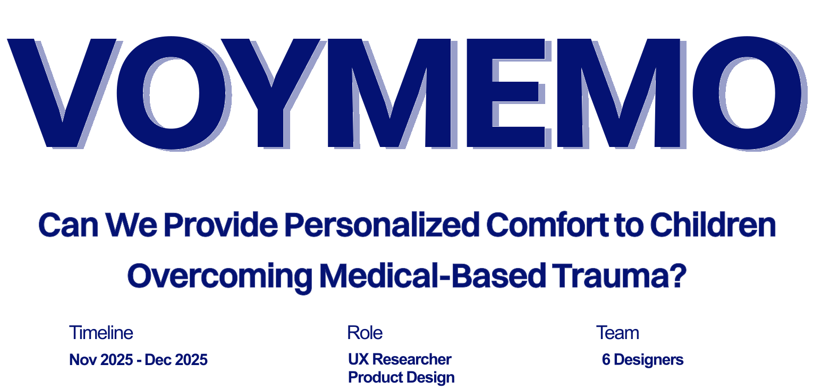

Framework visuals & mapping — placeholder
Artifacts
Replace this card with exported maps, photos, or clips from Voymemo as you finalize the page.


“How do you design for lives you don't live?”
“Listen first, design later.”
“Teens, caregivers, and care systems—together.”
Our client asked how teens with chronic conditions, caregivers, and healthcare systems interact—and how we could design responsibly without living those lives ourselves.
We started with depth: interviews, frameworks, and film to keep real voices in the room.
Ethnographic film
In-depth interviews
with teens living with chronic conditions
Identity, connection, and care—
often in tension.
Teens wanted to be seen as “normal” while still owning their story—disclosure on their terms, not as the defining label.
Friends mattered most when flares hit—but those were often the loneliest moments, with support coming from parents instead of peers.
We mapped interviews onto Maslow's hierarchy and a need-progression framework—from common social pressures to highly personal qualifiers.
Placeholder: detailed framework diagrams and affinity artifacts from the original case study can slot into the carousel below.
Swipe or scroll sideways for more
Replace this card with exported maps, photos, or clips from Voymemo as you finalize the page.
These patterns showed up again and again in interviews—and stayed with us through synthesis and storytelling.
What we heard
Not hiding—but not being reduced to a diagnosis. Control over when and how they explain.
What we heard
Peers anchor everyday life; during crises, many teens felt they could not “bother” friends and turned inward or to family.
What we heard
Wanting autonomy while relying on caregivers in acute moments—and not wanting health to swallow their whole identity.
Film and narrative became our shared reference—so the team could feel the weight of each quote, not just read it.
From there we asked how comfort, dignity, and agency could coexist in any future concept.
The ethnographic film below is the same spine we used in critique: tone, pacing, and silence as evidence.
Full UI exploration can layer on this foundation when you are ready to extend the case study.
Preserve their voices—a short documentary from interview footage.